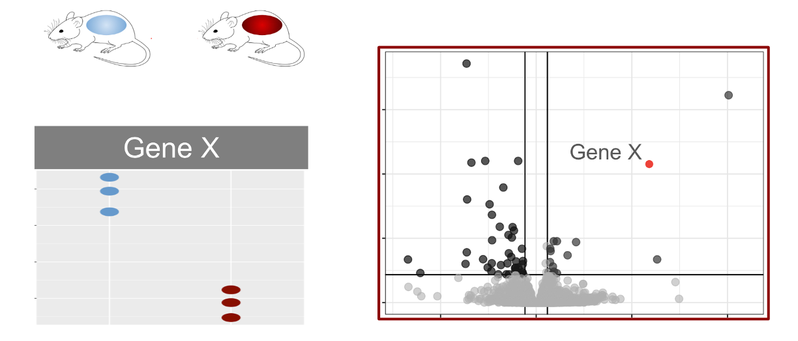
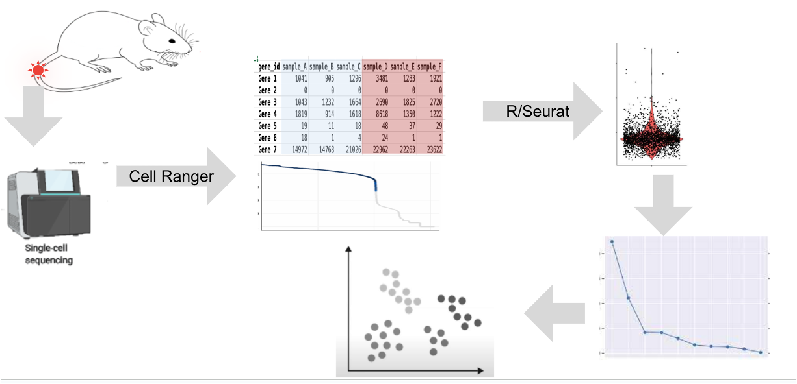

Objectives
- Compare and contrast the capabilities and approach in scRNA-Seq vs
bulk RNA-Seq approaches.
- Review the details of the 10x Genomics approach to single-cell
sequencing
- Introduce a specific experimental model to guide discussion and
learning
- Outline the high-level steps to analyze scRNA-Seq
Bulk RNA-seq and scRNA-Seq
Bulk RNA-seq typically involves comparing the expression levels of
genes between sets of tissues, such as untreated and treated mice. It
allows researchers to characterize gene expression differences across
entire tissues, providing a snapshot of the average expression
program.

scRNA-seq leverages the approaches and protocols of bulk RNA-seq, but
instead at the level of cells instead of tissues/bulk samples. There are
several distinct ways to do this, but common steps include
Key Advantages of Single-Cell RNA-Seq
- Cell-Level Insights: Unlike bulk RNA-seq,
single-cell analysis provides insights into expression programs at the
individual cell or cell group level.
- Heterogeneity Detection: Single-cell RNA-seq
reveals variations in gene expression among different cell types within
a tissue.
- Response to Interventions: It enables the
examination of cell-level responses to interventions, offering a
detailed understanding of how individual cells react to stimuli.
- Temporal Analysis: It allows the study of how cell
states change over time and how cells differentiate.
Challenges of Single-Cell RNA-Seq
While powerful, single-cell RNA-seq comes with added complexity and
cost. The protocol requires nuanced decision-making, iterative analysis,
and considerations for data storage and computational resources.
A Practical Example
The blog post concludes with a focus on a specific experiment
involving mice that underwent a soft tissue injury. The researchers aim
to identify cell types associated with an aberrant injury response using
single-cell RNA-seq techniques.
Workshop Overview
The steps of the workshop, including running cell ranger to transform
raw sequence data, generating a count matrix, and performing quality
control evaluations. Further steps involve data analysis in RStudio,
dimensional reduction to separate signal from noise, and potential
projections to visualize cell populations.

Represented Another way:

A whirlwind intro to 10x Genomics basics
One common microfluidic approach, like the 10X Genomics method, uses
beads with unique identifiers. These beads, along with cells, pass
through a microfluidic device, creating isolated reaction vessels.
The bead contains oligomers with a PCR handle, a cell barcode, and a
unique molecular identifier (UMI). After cell lysis, transcripts are
reverse transcribed, incorporating the cell-specific barcode. This
enables the association of each transcript with a specific cell.
Computational analysis of these barcodes allows the separation of
transcripts into constituent cells.
Conclusion
scRNA-seq offers a powerful and nuanced approach to studying gene
expression at the cellular level. This technique can elaborate our
understanding of cellular heterogeneity, responses to interventions, and
the cell state dynamics.
LS0tCnRpdGxlOiAiT3JpZW50aW5nIG9uIHNjUk5BLVNlcSIKYXV0aG9yOiAiVU0gQmlvaW5mb3JtYXRpY3MgQ29yZSIKZGF0ZTogImByIFN5cy5EYXRlKClgIgpvdXRwdXQ6CiAgICAgICAgaHRtbF9kb2N1bWVudDoKICAgICAgICAgICAgaW5jbHVkZXM6CiAgICAgICAgICAgICAgICBpbl9oZWFkZXI6IGhlYWRlci5odG1sCiAgICAgICAgICAgIHRoZW1lOiBwYXBlcgogICAgICAgICAgICB0b2M6IHRydWUKICAgICAgICAgICAgdG9jX2RlcHRoOiA0CiAgICAgICAgICAgIHRvY19mbG9hdDogdHJ1ZQogICAgICAgICAgICBudW1iZXJfc2VjdGlvbnM6IGZhbHNlCiAgICAgICAgICAgIGZpZ19jYXB0aW9uOiB0cnVlCiAgICAgICAgICAgIG1hcmtkb3duOiBHRk0KICAgICAgICAgICAgY29kZV9kb3dubG9hZDogdHJ1ZQotLS0KCjxzdHlsZSB0eXBlPSJ0ZXh0L2NzcyI+CmJvZHksIHRkIHsKICAgZm9udC1zaXplOiAxOHB4Owp9CmNvZGUucnsKICBmb250LXNpemU6IDEycHg7Cn0KcHJlIHsKICBmb250LXNpemU6IDEycHgKfQo8L3N0eWxlPgoKCiMgT2JqZWN0aXZlcwoKLSBDb21wYXJlIGFuZCBjb250cmFzdCB0aGUgY2FwYWJpbGl0aWVzIGFuZCBhcHByb2FjaCBpbiBzY1JOQS1TZXEgdnMgYnVsayBSTkEtU2VxIGFwcHJvYWNoZXMuCi0gUmV2aWV3IHRoZSBkZXRhaWxzIG9mIHRoZSAxMHggR2Vub21pY3MgYXBwcm9hY2ggdG8gc2luZ2xlLWNlbGwgc2VxdWVuY2luZwotIEludHJvZHVjZSBhIHNwZWNpZmljIGV4cGVyaW1lbnRhbCBtb2RlbCB0byBndWlkZSBkaXNjdXNzaW9uIGFuZCBsZWFybmluZwotIE91dGxpbmUgdGhlIGhpZ2gtbGV2ZWwgc3RlcHMgdG8gYW5hbHl6ZSBzY1JOQS1TZXEKCiMjIEJ1bGsgUk5BLXNlcSBhbmQgc2NSTkEtU2VxCkJ1bGsgUk5BLXNlcSB0eXBpY2FsbHkgaW52b2x2ZXMgY29tcGFyaW5nIHRoZSBleHByZXNzaW9uIGxldmVscyBvZiBnZW5lcyBiZXR3ZWVuIHNldHMgb2YgdGlzc3Vlcywgc3VjaCBhcyB1bnRyZWF0ZWQgYW5kIHRyZWF0ZWQgbWljZS4gSXQgYWxsb3dzIHJlc2VhcmNoZXJzIHRvIGNoYXJhY3Rlcml6ZSBnZW5lIGV4cHJlc3Npb24gZGlmZmVyZW5jZXMgYWNyb3NzIGVudGlyZSB0aXNzdWVzLCBwcm92aWRpbmcgYSBzbmFwc2hvdCBvZiB0aGUgYXZlcmFnZSBleHByZXNzaW9uIHByb2dyYW0uCgohW10oaW1hZ2VzLzAwQS1PcmllbnRpbmdPblNjUk5BU2VxL2J1bGstcm5hLXNlcS5wbmcpCgoKc2NSTkEtc2VxIGxldmVyYWdlcyB0aGUgYXBwcm9hY2hlcyBhbmQgcHJvdG9jb2xzIG9mIGJ1bGsgUk5BLXNlcSwgYnV0IGluc3RlYWQgYXQgdGhlIGxldmVsIG9mIGNlbGxzIGluc3RlYWQgb2YgdGlzc3Vlcy9idWxrIHNhbXBsZXMuIFRoZXJlIGFyZSBzZXZlcmFsIGRpc3RpbmN0IHdheXMgdG8gZG8gdGhpcywgYnV0IGNvbW1vbiBzdGVwcyBpbmNsdWRlCiFbXShpbWFnZXMvMDBBLU9yaWVudGluZ09uU2NSTkFTZXEvc2NSTkEtU2VxLnBuZykKCgojIyMgS2V5IEFkdmFudGFnZXMgb2YgU2luZ2xlLUNlbGwgUk5BLVNlcQoKMS4gKipDZWxsLUxldmVsIEluc2lnaHRzOioqIFVubGlrZSBidWxrIFJOQS1zZXEsIHNpbmdsZS1jZWxsIGFuYWx5c2lzIHByb3ZpZGVzIGluc2lnaHRzIGludG8gZXhwcmVzc2lvbiBwcm9ncmFtcyBhdCB0aGUgaW5kaXZpZHVhbCBjZWxsIG9yIGNlbGwgZ3JvdXAgbGV2ZWwuCjEuICoqSGV0ZXJvZ2VuZWl0eSBEZXRlY3Rpb246KiogU2luZ2xlLWNlbGwgUk5BLXNlcSByZXZlYWxzIHZhcmlhdGlvbnMgaW4gZ2VuZSBleHByZXNzaW9uIGFtb25nIGRpZmZlcmVudCBjZWxsIHR5cGVzIHdpdGhpbiBhIHRpc3N1ZS4KMS4gKipSZXNwb25zZSB0byBJbnRlcnZlbnRpb25zOioqIEl0IGVuYWJsZXMgdGhlIGV4YW1pbmF0aW9uIG9mIGNlbGwtbGV2ZWwgcmVzcG9uc2VzIHRvIGludGVydmVudGlvbnMsIG9mZmVyaW5nIGEgZGV0YWlsZWQgdW5kZXJzdGFuZGluZyBvZiBob3cgaW5kaXZpZHVhbCBjZWxscyByZWFjdCB0byBzdGltdWxpLgoxLiAqKlRlbXBvcmFsIEFuYWx5c2lzOioqIEl0IGFsbG93cyB0aGUgc3R1ZHkgb2YgaG93IGNlbGwgc3RhdGVzIGNoYW5nZSBvdmVyIHRpbWUgYW5kIGhvdyBjZWxscyBkaWZmZXJlbnRpYXRlLgoKIyMjIENoYWxsZW5nZXMgb2YgU2luZ2xlLUNlbGwgUk5BLVNlcQoKV2hpbGUgcG93ZXJmdWwsIHNpbmdsZS1jZWxsIFJOQS1zZXEgY29tZXMgd2l0aCBhZGRlZCBjb21wbGV4aXR5IGFuZCBjb3N0LiBUaGUgcHJvdG9jb2wgcmVxdWlyZXMgbnVhbmNlZCBkZWNpc2lvbi1tYWtpbmcsIGl0ZXJhdGl2ZSBhbmFseXNpcywgYW5kIGNvbnNpZGVyYXRpb25zIGZvciBkYXRhIHN0b3JhZ2UgYW5kIGNvbXB1dGF0aW9uYWwgcmVzb3VyY2VzLgoKIVtdKGltYWdlcy8wMEEtT3JpZW50aW5nT25TY1JOQVNlcS9mb3Jlc3RfdHJlZXMucG5nKQoKIyMgQSBQcmFjdGljYWwgRXhhbXBsZQoKVGhlIGJsb2cgcG9zdCBjb25jbHVkZXMgd2l0aCBhIGZvY3VzIG9uIGEgc3BlY2lmaWMgZXhwZXJpbWVudCBpbnZvbHZpbmcgbWljZSB0aGF0IHVuZGVyd2VudCBhIHNvZnQgdGlzc3VlIGluanVyeS4gVGhlIHJlc2VhcmNoZXJzIGFpbSB0byBpZGVudGlmeSBjZWxsIHR5cGVzIGFzc29jaWF0ZWQgd2l0aCBhbiBhYmVycmFudCBpbmp1cnkgcmVzcG9uc2UgdXNpbmcgc2luZ2xlLWNlbGwgUk5BLXNlcSB0ZWNobmlxdWVzLgoKIVtdKGltYWdlcy8wMEEtT3JpZW50aW5nT25TY1JOQVNlcS9tb3VzZV9pbmp1cnkucG5nKQoKCiMjIFdvcmtzaG9wIE92ZXJ2aWV3CgpUaGUgc3RlcHMgb2YgdGhlIHdvcmtzaG9wLCBpbmNsdWRpbmcgcnVubmluZyBjZWxsIHJhbmdlciB0byB0cmFuc2Zvcm0gcmF3IHNlcXVlbmNlIGRhdGEsIGdlbmVyYXRpbmcgYSBjb3VudCBtYXRyaXgsIGFuZCBwZXJmb3JtaW5nIHF1YWxpdHkgY29udHJvbCBldmFsdWF0aW9ucy4gRnVydGhlciBzdGVwcyBpbnZvbHZlIGRhdGEgYW5hbHlzaXMgaW4gUlN0dWRpbywgZGltZW5zaW9uYWwgcmVkdWN0aW9uIHRvIHNlcGFyYXRlIHNpZ25hbCBmcm9tIG5vaXNlLCBhbmQgcG90ZW50aWFsIHByb2plY3Rpb25zIHRvIHZpc3VhbGl6ZSBjZWxsIHBvcHVsYXRpb25zLgoKIVtdKGltYWdlcy8wMEEtT3JpZW50aW5nT25TY1JOQVNlcS9zY19hbmFseXNpcy5wbmcpCgpSZXByZXNlbnRlZCBBbm90aGVyIHdheToKPGltZyBzcmM9ImltYWdlcy93YXlmaW5kZXIvd2F5ZmluZGVyLnBuZyIgYWx0PSJ3YXlmaW5kZXIiIHN0eWxlPSJoZWlnaHQ6IDQwMHB4OyIvPgoKCiMjIEEgd2hpcmx3aW5kIGludHJvIHRvIDEweCBHZW5vbWljcyBiYXNpY3MKCk9uZSBjb21tb24gbWljcm9mbHVpZGljIGFwcHJvYWNoLCBsaWtlIHRoZSAxMFggR2Vub21pY3MgbWV0aG9kLCB1c2VzIGJlYWRzIHdpdGggdW5pcXVlIGlkZW50aWZpZXJzLiBUaGVzZSBiZWFkcywgYWxvbmcgd2l0aCBjZWxscywgcGFzcyB0aHJvdWdoIGEgbWljcm9mbHVpZGljIGRldmljZSwgY3JlYXRpbmcgaXNvbGF0ZWQgcmVhY3Rpb24gdmVzc2Vscy4KClRoZSBiZWFkIGNvbnRhaW5zIG9saWdvbWVycyB3aXRoIGEgUENSIGhhbmRsZSwgYSBjZWxsIGJhcmNvZGUsIGFuZCBhIHVuaXF1ZSBtb2xlY3VsYXIgaWRlbnRpZmllciAoVU1JKS4gQWZ0ZXIgY2VsbCBseXNpcywgdHJhbnNjcmlwdHMgYXJlIHJldmVyc2UgdHJhbnNjcmliZWQsIGluY29ycG9yYXRpbmcgdGhlIGNlbGwtc3BlY2lmaWMgYmFyY29kZS4gVGhpcyBlbmFibGVzIHRoZSBhc3NvY2lhdGlvbiBvZiBlYWNoIHRyYW5zY3JpcHQgd2l0aCBhIHNwZWNpZmljIGNlbGwuIENvbXB1dGF0aW9uYWwgYW5hbHlzaXMgb2YgdGhlc2UgYmFyY29kZXMgYWxsb3dzIHRoZSBzZXBhcmF0aW9uIG9mIHRyYW5zY3JpcHRzIGludG8gY29uc3RpdHVlbnQgY2VsbHMuCgoKIyBDb25jbHVzaW9uCgpzY1JOQS1zZXEgb2ZmZXJzIGEgcG93ZXJmdWwgYW5kIG51YW5jZWQgYXBwcm9hY2ggdG8gc3R1ZHlpbmcgZ2VuZSBleHByZXNzaW9uIGF0IHRoZSBjZWxsdWxhciBsZXZlbC4gVGhpcyB0ZWNobmlxdWUgY2FuIGVsYWJvcmF0ZSBvdXIgdW5kZXJzdGFuZGluZyBvZiBjZWxsdWxhciBoZXRlcm9nZW5laXR5LCByZXNwb25zZXMgdG8gaW50ZXJ2ZW50aW9ucywgYW5kIHRoZSBjZWxsIHN0YXRlIGR5bmFtaWNzLgoKCjxici8+Cjxici8+Cjxoci8+CnwgW0JhY2sgdG8gaW50cm9kdWN0aW9uXSh3b3Jrc2hvcF9pbnRyby5odG1sKSB8IFtUb3Agb2YgdGhpcyBsZXNzb25dKCN0b3ApIHwgW05leHQgbGVzc29uXSgwMEItQ2VsbFJhbmdlckluQWN0aW9uLmh0bWwpIHwKfCA6LS0tIHwgOi0tLS06IHwgLS0tOiB8Cgo=